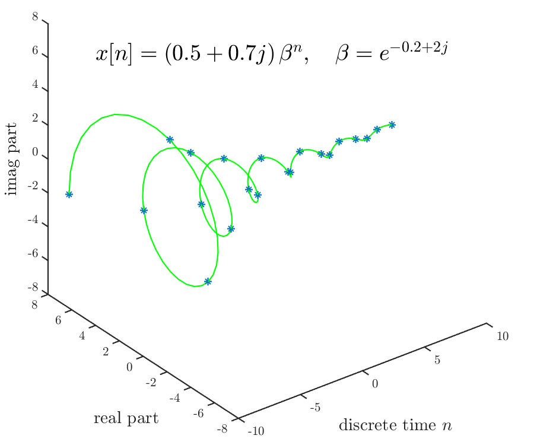

Latex labels with MATLAB®
Technical Note — 6 Sep 2016Contents
{kind=link}
MATLAB® code — cmplxexp.m
alpha=-0.2+2j;
C=0.5+0.7j;
dd=0.1;
t=[-10:dd:10];
yt=C*exp(alpha*t);
clf
subplot('position',[0.05 0.06 0.9 1.1]) % so png's clip nicely
% plot the continuous curve
plot3(t, real(yt), imag(yt), 'green')
axis([-10 10 -8 8 -8 8]); axis square
set(0, 'defaultAxesTickLabelInterpreter','latex');
set(0, 'defaultLegendInterpreter','latex');
% labels (in latex)
xlabel('continuous time $t$', 'Interpreter', 'Latex', 'FontSize', 14)
ylabel('real part', 'FontSize', 14)
zlabel('imag part', 'FontSize', 14)
h=text(-10, 4, 8, '$x(t)=(0.5+0.7j)\,e^{(-0.2+2j)t}$', 'FontSize', 18);
shg; pause(2); % flash up the CT complex exponential
% output CT complex exponential to png file
set(gcf,'PaperUnits','inches','PaperPosition',[0 0 6 5]) %150dpi
saveas(gcf, 'figures/ct-cmplxexp', 'png')
hold on; % we will overlay the CT complex exponential with the DT complex exponential
% plot the discrete points
n=[-10:10];
yn=C*exp(alpha*n);
plot3(n, real(yn), imag(yn), '*')
% labels (in latex)
xlabel('discrete time $n$', 'Interpreter', 'Latex', 'FontSize', 14)
delete(h); % remove old CT text label
text(-10, 4, 8, '$x[n]=(0.5+0.7j)\,\beta^n,\quad \beta=e^{-0.2+2j}$', 'FontSize', 18)
% output DT complex exponential to png file
set(gcf,'PaperUnits','inches','PaperPosition',[0 0 6 5]) %150dpi
saveas(gcf, 'figures/dt-cmplxexp', 'png')
hold off; shgOutput png Figure — ct-cmplxexp.png

Output png Figure — dt-cmplxexp.png

Code Index:
[06 Sep 2016]— Latex labels with MATLAB®[21 Jul 2015]— TikZ–tikzexternalize to png[18 Jul 2015]— Spherical Harmonics LaTeX Macros[01 Aug 2015]— BibDesk Publication html Export
Sphere Index:
[06 Aug 2015]— Spherical Harmonic Plotting with MATLAB®[18 Jul 2015]— Spherical Harmonics LaTeX Macros[16 Jul 2015]— Spherical Harmonic MATLAB® Code 1
Misc Index:
[31 Jul 2015]— Outputing png from pgfornament[18 Jul 2015]— Improving Gauss-Legendre